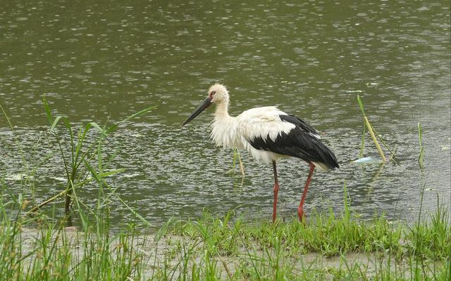

7月12日清晨，北京温榆河公园内清河、温榆河两河交汇处的“生态心”被降雨笼罩，白鹭、苍鹭、鸬鹚等鸟儿们在此戏水。其中，还有一只“重量级的嘉宾”——东方白鹳。
东方白鹳是国家一级保护动物，国际自然保护联盟判定为濒危种，目前野生种群数量仅3000只左右，因其体态优雅，又被称为“鸟中君子”。
被观测到的东方白鹳拥有一袭标志性的“白衣黑裙”，双腿修长，颈部时常弯成漂亮的S形。
“这是在温榆河流域第一次监测到东方白鹳。”温榆河生态监测与评价专家吴岚介绍，东方白鹳是一种“大型涉禽”，钟爱偏僻、开阔，特别是长有稀疏树木的河流、湖泊、水塘以及水渠岸边和沼泽地。北京地区缺乏这类地理生境，因此东方白鹳在北京并不常见。
“过去，在北京偶然会有‘路过’的东方白鹳出现，也多在春秋两季，夏季是东方白鹳的繁殖季，繁殖季的鸟类更敏感，对自然条件的要求更苛刻。能在繁殖季见到东方白鹳，说明‘生态心’自然带的条件很可能已经适应东方白鹳安家落户、养育后代的需要。”吴岚说。
此次发现东方白鹳的温榆“生态心”位于两河交汇处，湿地水网非常丰富。由于近期降雨增多，河道水量更加丰沛，挺水植物生长繁茂，对鸟儿栖息来说，隐蔽性极强。
温榆河生态监测与评价专家王玉玉介绍：“东方白鹳的胃口很大，以鱼类、水生甲壳类、蛙类、蛇类和昆虫等为食，这从侧面佐证了该水域物种的数量和种类的丰富性。”
与东方白鹳一同被观测到的还有鸳鸯、骨顶鸡、苍鹭、夜鹭等成功繁殖的夏候鸟。截至目前，在温榆河公园区域内已经观测并记录到动植物614种，包括动物474种，植物140种，其中国家重点保护物种和北京市保护物种47种。
今年5月，温榆河协调小组办公室组织编制完成了《北京温榆河公园自然带生境修复及生物多样性恢复方案》，方案提出温榆生态心位于两河交汇，目标是恢复“鸟的天堂”“鱼的家园”。另外，园区的森林生态核，位于昌平二期，致力于恢复森林生物多样性示范区。位于顺义二期蓄滞洪区的湿地生态核主要建设城市生物多样性保育示范中心。
下一步公园将以保护鸟类、鱼类、底栖动物（生活史的全部或大部分时间生活于水体底部的水生动物群）、昆虫、两栖和爬行动物以及小型哺乳动物栖息、繁殖、停留地为主，实施120公顷北京地带性植物恢复区、5公顷城市生物多样性保育示范中心、7处水生生物多样性恢复重点区域、38公里昆虫食源带、10公顷北京野生花卉中心，实现保护本地动植物1000种以上物种。同时，培养7个以月季、芍药+牡丹、海棠、丁香+绣线菊、中草药、榆柳为主的“植物多样性专题园”。
上善若水
3 days ago东方白鹳“驾临”，可以见得生态文明建设取得了初步进展
花鸟与鱼
1 days ago点赞，厉害了
京城小哥
3 days ago北京也有这么多的珍稀物种啊
我是好软